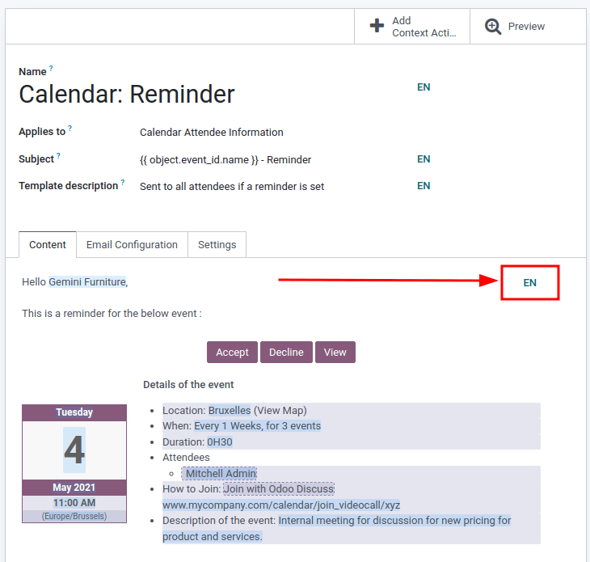

Email templates¶
Email templates are saved emails that are used repeatedly to send emails from the database. They allow users to send quality communications, without having to compose the same text repeatedly.
Creating different templates that are tailored to specific situations lets users choose the right message for the right audience. This increases the quality of the message and the overall engagement rate with the customer.
Note
Email templates in Odoo use QWeb or XML, which allows for editing emails in their final rendering, making customizations more robust, without having to edit any code whatsoever. This means that Odoo can use a Graphical User Interface (GUI) to edit emails, which edits the backend code. When the received email is read by the end user’s program, different formatting and graphics will appear in the final form of it.
Access email templates in developer mode by navigating to .
Editing email templates¶
The powerbox feature can be used when working with email templates. This feature provides the ability to directly edit the formatting and text in an email template, as well as the ability to add links, buttons, appointment options, or images.
Additionally, the XML/HTML code of the email template can be edited directly, via the </> icon. Dynamic placeholders (referencing fields within Odoo) are also available for use in the email template.
Powerbox¶
The powerbox feature is an enriched text editor with various formatting, layout, and text options.
It can also be used to add XML/HTML features in an email template. The powerbox feature is activated
by typing a forward slash / in the body of the email template.
When a forward slash / is typed in the body of an email template, a drop-down menu appears with
the following options:
Structure
Bulleted list: Create a simple bulleted list.
Numbered list: Create a list with numbering.
Checklist: Track tasks with a checklist.
Table: Insert a table.
Separator: Insert a horizontal rule separator.
Quote: Add a blockquote section.
Code: Add a code section.
2 columns: Convert into two columns.
3 columns: Convert into three columns.
4 columns: Convert into four columns.
Format
Heading 1: Big section heading.
Heading 2: Medium section heading.
Heading 3: Small section heading.
Switch direction: Switch the text’s direction.
Text: Paragraph block.
Media
Image: Insert an image.
Article: Link an article.
Navigation
Link: Add a link.
Button: Add a button.
Appointment: Add a specific appointment.
Calendar: Schedule an appointment.
Widgets
3 Stars: Insert a rating over three stars.
5 Stars: Insert a rating over five stars.
Basic Blocks
Signature: Insert your signature.
Marketing Tools
Dynamic Placeholders: Insert personalized content.
Tip
To use any of these options, click on the desired feature from the powerbox drop-down menu. To
format existing text with a text-related option (e.g. Heading 1, Switch
direction, etc.), highlight the text, then type in the activator key (forward slash) /, and
select the desired option from the drop-down menu.
See also
XML/HTML code editor¶
To access the XML/HTML editor for an email template, first enter developer mode. Then, click the </> icon in the upper-right corner of the template, and proceed to edit the XML/HTML. To return to the standard text editor, click the </> icon again.

Warning
The XML/HTML editor should be accessed with caution as this is the backend code of the template. Editing the code can cause the email template to break immediately or when upgrading the database.
Dynamic placeholders¶
Dynamic placeholders reference certain fields within the Odoo database to produce unique data in the email template.
Example
Many companies like to customize their emails with a personalized piece of customer information
to grab attention. This can be accomplished in Odoo by referencing a field within a model by
inserting a dynamic placeholder. For example, a customer’s name can be referenced in the email
from the Customer field on the Sales Order model. The dynamic placeholder
for this field is: {{ object.partner_id }}.
Dynamic placeholders are encoded to display fields from within the database. Dynamic placeholders can be used in the Body (Content Tab) of the email template. They can also be used in the fields present in the Email Configuration tab, the Subject of the email, and the Language.
To use the dynamic placeholders in the Body of an email open the powerbox feature by
typing in / into the body of the email template under the Content tab. Scroll to the
bottom of the options list, to Marketing Tools. Next, select Dynamic
Placeholder. Then select the dynamic placeholder from a list of available options and follow the
prompts to configure it with the desired corresponding Odoo field. Each dynamic placeholder will
vary in configuration.
Note
Each unique combination of Fields, Sub-models and Sub-fields creates a different dynamic placeholder. Imagine it as a combination to the field that is being created.
To search the available fields, simply type in the front-end name (on user-interface) of the field in the search. This will find a result from all of the available fields for the model that the email template is created for.
Warning
Customizing email templates are out of the scope of Odoo Support.
Rich text editor¶
A rich text editor toolbar can be accessed by highlighting text in the email template. This can be used to change the heading, font size/style, color, add a list type, or a link.

Resetting email templates¶
Should the email template not work because the code has been altered it can be reset to restore it back to the out-of-box default template. Simply click on the Reset Template button in the upper left-hand of the screen and the template will be reset.
Default reply on email templates¶
Under the Email Configuration tab on an email template, there is a Reply To field. In this field, add email addresses to which replies are redirected when sending emails en masse using this template.
Tip
Add multiple email addresses by adding a comma , between the addresses or dynamic
placeholders.

The Reply To field is only used for mass mailing (sending emails in bulk). Bulk emails can be sent in almost every Odoo application that has a list view option.
To send mass mails, while in list view, check the boxes next to the desired records where the emails are to be sent, click the Action button (represented by a ⚙️ (gear) icon), and select the desired email option from the Action drop-down menu. Email options can vary by the particular list view and application.
If it is possible to send an email, a mail composer pop-up window appears, with values that can be defined and customized. This option will be available on the Action button on pages where emails can be sent in bulk—for example, on the Customers page of the CRM app. This action occurs throughout the Odoo database.

Transactional emails and corresponding URLs¶
In Odoo, multiple events can trigger the sending of automated emails. These emails are known as transactional emails, and sometimes contain links redirecting to the Odoo database.
By default, links generated by the database use the dynamic web.base.url key defined in the system
parameters. For more information about this, see system parameters.
If the Website application is not installed, the web.base.url key will always be the default
parameter used to generate all the links.
Important
The web.base.url key can only have a single value, meaning that, in a multi-website or
multi-company database environment, even if there is a specific domain name for each website, the
links generated to share a document (or the links within a transactional email) may remain the
same, regardless of which website/company is related to the sending of the email/document.
Example
If the Value of the web.base.url system parameter is equal to
https://www.mycompany.com and there are two separate companies in Odoo with different
website URLs: https://www.mycompany2.com and https://www.mycompany1.com, the links created
by Odoo to share a document, or send a transactional email, come from the domain:
https://www.mycompany.com, regardless of which company sends the document or email.
This is not always the case, as some Odoo applications (eCommerce, for example) have a link established in the database with the Website application. In that case, if a specific domain is defined for the website, the URL generated in the email template uses the domain defined on the corresponding website of the company.
Example
When a customer makes a purchase on an Odoo eCommerce website, the order has an established link with that website. As a result, the links in the confirmation email sent to the customer use the domain name for that specific website.
Note
A document shared using the Documents application will always use the web.base.url key,
as the document shared is not associated with any particular website. This means that the URL
will always be the same (the web.base.url key value), no matter what company it’s shared from.
This is a known limitation.
For more information about how to configure domains, check out the domain name documentation.
Updating translations within email templates¶
In Odoo, email templates are automatically translated for all users in the database for all of the languages installed. Changing the translations shouldn’t be necessary. However, if for a specific reason, some of the translations need to be changed, it can be done.
Warning
Like any modification in the code, if translation changes are not done correctly (for example, modifications leading to bad syntax), it can break the template, and as a result, the template will appear blank.
In order to edit translations, first enter developer mode. Then, on the email template, click on the Edit button, and then click on the language button, represented by the initials of the language currently being used (e.g. EN for English).
Note
If there aren’t multiple languages installed and activated in the database, or if the user does not have administration access rights, the language button will not appear.
A pop-up window with the different languages installed on the database appears. From this pop-up, editing of translations is possible. When the desired changes have been made, click the Save button to save the changes.
Note
When editing the translations, the default language set in the database appears in bold.